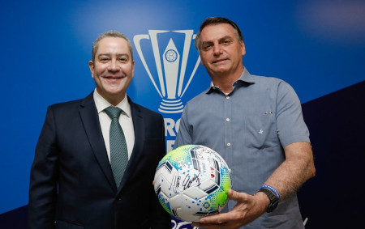

Apesar de todas as questões que envolvem a seleção brasileira, a CBF e a própria Copa América, nada oficial indica que o torneio, não vai acontecer ou possa ser adiado. O colunista Marcelo Rizzo, do Uol, disse que, mesmo se estiverem desfalcadas por um possível boicote de jogadores, as associações prometem jogar a competição.
A informação, porém, é da manhã de sexta-feira (4), antes de algumas das polêmicas parecerem como a denúncias de assédios contra Rogério Caboclo, presidente da CBF. No final da tarde, o jornalista Andrei Kampff, também do Uol, informou em sua conta do Twitter que a Conmebol já começava a repensar a realização da Copa América. Os impactos de um possível adiamento ou até cancelamento estariam sendo analisados pela entidade sul-americana.
No entanto,o presidente Jair Bolsonaro participou na noite de sábado (6) de uma reunião do Conselho da CONMEBOL, para discutir a realização ou não do torneio no país, e reiterou que o Brasil está pronto para sediar a Copa América.
O recado, apesar de ter agradado os cartolas da confederação, ainda é tratado como dúvida, depois que os capitãs das dez seleções que vão jogar a Copa América, teriam se recusado a participar do encontro, enquanto cartolas de Brasil, Argentina e Uruguai relataram que enfrentam resistências internas. Isso gerou insatisfação no presidente Jair Bolsonaro, que solicitou a troca de técnico para um que seja apoiador do governo e a reconvocação da seleção antes da Copa América. Apesar do presidente da CBF Rogério Caboclo ter aceitado, ele foi afatastado do cargo de presidente da CBF por 30 dias devido as denúncias de assédio previamente feitas.
Antes da realização da Copa América, as seleções ainda têm os compromissos das Eliminatórias da Copa do Mundo de 2022. Os jogos terminam na terça-feira (8), alguns dias antes da data em que está marcado o início do torneio - 13 de junho.